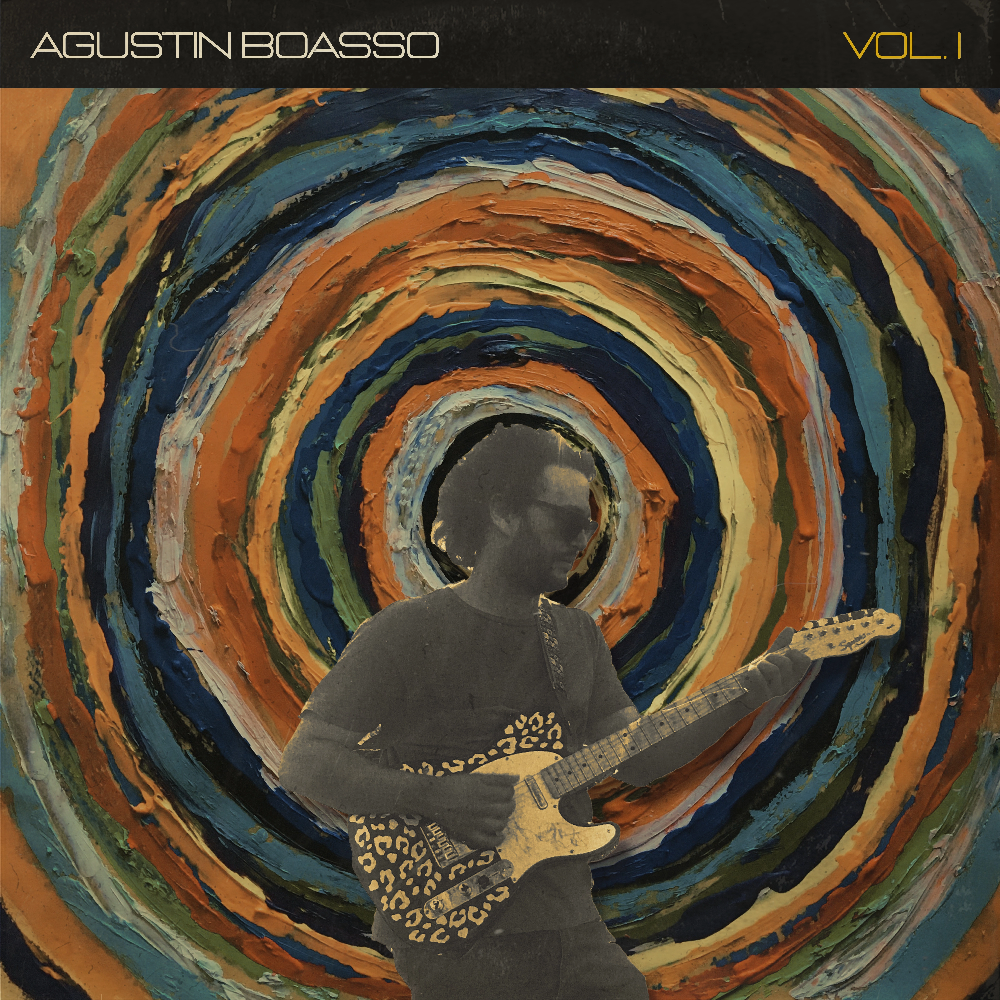

AGUSTIN BOASSO Es un musico compositor de la ciudad de Cordoba, Argentina.
Incia su carrera en el año 2019 con el lanzamiento de su primer EP "AGUSTIN BOASSO: Vol. I". Cuatro canciones presentadas en formato de duracion extendida cuya totalidad no supera los 10 minutos:
Humo.
Solo se que es hoy.
Khorintia.
Victorniox.
Este disco fue producido en Un Mañana Estudio a cargo de Facundo Verón y Agustin Boasso.
El mastering y la mezcla a cargo de Germán Rechitelli y el artowork y piezas graficas gracias a Federico Kenis.
En este disco el autor intenta plasmar en canciones momentos de la cotideanidad desde una perspectiva mas sensible y emocional, usando esta herramienta como un disparador que mejora el dia a dia.
Musicos que participaron en esta entrega:
El material cuenta con su version fisica de cortisimo alcance y su stream en plataformas.
PODES ESCUCHARLO HACIENDO CLICK AQUI.